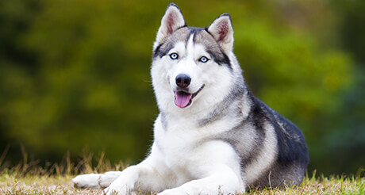
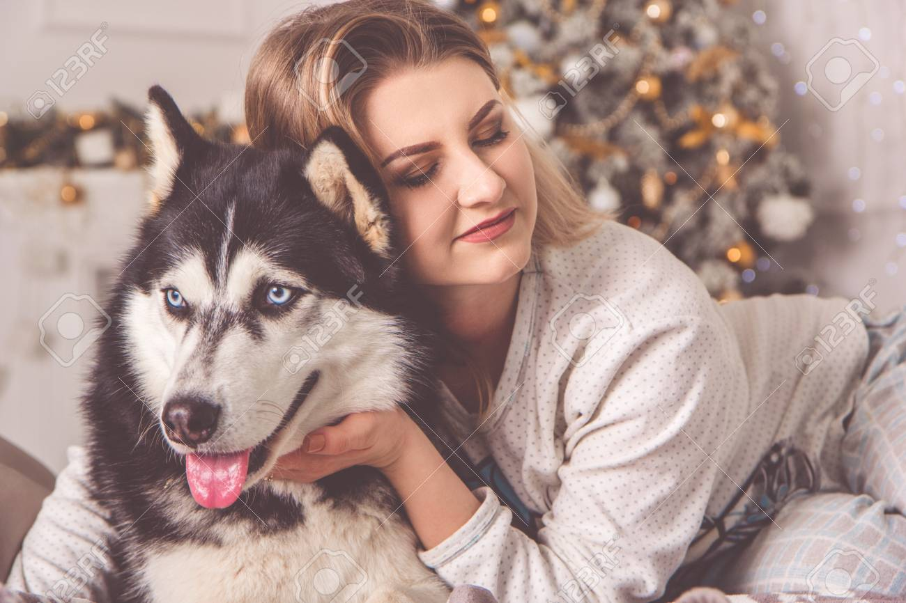
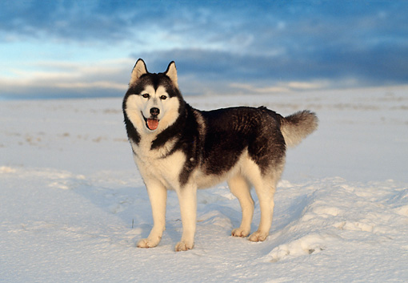

About the Siberian Husky

The graceful, medium-sized Siberian Husky’s almond-shaped eyes can be either brown or blue—and sometimes one of each—and convey a keen but amiable and even mischievous expression. Quick and nimble-footed, Siberians are known for their powerful but seemingly effortless gait. Tipping the scales at no more than 60 pounds, they are noticeably smaller and lighter than their burly cousin, the Alaskan Malamute. In fact, breeders and fanciers prefer the moniker Siberians over huskies, as the latter suggests a bigger, brawnier dog than what is the standard for the breed. As born pack dogs, Siberians enjoy family life and get on well with other dogs; their innate friendliness render them indifferent watchdogs. This breed is also energetic and can’t resist chasing small animals, so secure running room is a must. An attractive feature of the breed: Siberians are naturally clean, with little doggy odor.
Temperament:
Loyal, Mischievous, Outgoing
Height: 21-23.5 inches (male), 20-22 inches (female)
Weight : 45-60 pounds (male), 35-50 pounds (female)
Life Expectancy: 12-14 years
CARE

Nutration
Feeding a high-quality dog food is essential for the Siberian’s healthy skin and coat. Adjustments in the level of protein in the food is required for the working Siberian, based on the level of activity. In the summer months, a lower protein level may be appropriate, around 20 percent, while a dog working in harness in wintertime may need 32 percent protein. Monitor each individual Siberian, and adjust the amount and type of food as required. Be careful not to overfeed. Monitor the weight of each dog, and be selective about supplements.
Grooming
Siberian Huskies are considered a “natural” breed. They are remarkably self-cleaning and often need only a few baths a year, unless being shown in conformation dog shows. Weekly brushings help keep the coat and skin in good condition. Siberians have a double coat—an undercoat, and guard hair. The undercoat is shed twice a year, and it is important to continually “rake out” the old coat, using a pin brush and metal comb. Pay close attention to the length of the nails, and keep them trimmed to prevent any foot problems. Siberians competing in conformation require a bit more selective grooming for the best presentation.
Exercise
Siberians are active, athletic dogs who need a lot of exercise. They are a working breed and happiest when they have a function to perform. Regular exercise is important both physically and mentally, and doing activities together strengthens the bond between dog and owner. Siberians were bred to run and will do so at every opportunity; it is vital to keep the dog on a leash, in harness, or in a fenced yard at all times. There are several AKC-sponsored activities that can be enjoyed by dog and owners—rally, agility, and obedience are a few. A busy and active Siberian is a happy and healthy Siberian. This breed is also very adaptable, and for those who live in a more urban setting, daily walks or doggie play groups can provide great exercise.
Training
All breeds benefit from early socialization, basic obedience training, and learning good manners, and the Siberian Husky is no exception. For those owners who want to work their dogs in harness, training for this requires hours of dedication and patience. There are several good books available on training for the trail that provide advice and information on getting started. The best approach is to make all training exercises fun for both dog and handler. Siberians are very social, and regularly need the company of their people or other dogs; they are not suited to being left alone all day. Most importantly, Siberians have an overwhelming desire to run, and they should be on leash or in a securely fenced-in area at all times and never allowed off lead.
Health
Fortunately, the Siberian Husky is a relatively healthy breed. Responsible breeders screen their breeding stock for health problems such as juvenile cataracts, and the breed’s national parent club, the Siberian Husky Club of America, has strict guidelines to help reduce reported cases. Beginning at 12 months of age, all Siberians who potentially will be part of a breeding program should be examined by a canine ophthalmologist. The exam is then repeated on a yearly basis. New screenings and tests are constantly being developed to help breeders in their selection of a potential dam and sire. Knowledgeable breeding practices ensure the future health of the breed. Owners of working Siberians need to closely monitor each dog to be able to recognize when something just isn’t right. Having a veterinarian familiar with working dogs is an advantage.
History
The Siberian Husky’s compact body, well-furred coat, erect ears, and thick, sickle-shaped tail immediately suggest the breed’s northern heritage. The breed’s ancestors were originally bred in northeastern Asia by the Chukchi people and were kept as companion dogs for their families as well as endurance sled dogs.
When changing climate conditions forced the semi-nomadic Chukchi to expand their hunting grounds or perish, they rose to the challenge by developing a sled dog capable of hauling light loads over vast expanses of frozen wasteland in sub-zero temperatures, with a minimum expenditure of energy. The Chukchi, isolated from the rest of the world, were able to maintain the purity of their sled teams for many generations. The dogs they developed were the direct forerunners of today’s Siberian Husky.
Siberians caught the eye of the public when they began winning sled races in the early 1900s, but they made headlines in 1925 when a legendary musher Leonhard Seppala led a relay of Siberian Huskies 658 miles in only five and a half days to rush a lifesaving serum to Nome, Alaska, where an epidemic of diphtheria had broken out. The thrilling “serum run,” reported breathlessly in newspapers around the world, won Siberians a popularity that has not abated to this day. Balto, who was Seppala’s lead dog on the final leg of the journey, remains one of the most honored hero dogs in canine history; a statue of him stands in New York City’s Central Park.
Mushers still keep packs of sledding Siberians for fun and sport throughout North America. Less adventurous devotees of the breed simply enjoy the company of this sociable, gentle companion.
General Aperence
The Siberian Husky is a medium-sized working dog, quick and light on
his feet and free and graceful in action. His moderately compact and well furred body, erect ears
and brush tail suggest his Northern heritage. His characteristic gait is smooth and seemingly
effortless. He performs his original function in harness most capably, carrying a light load at a
moderate speed over great distances. His body proportions and form reflect this basic balance of
power, speed and endurance. The males of the Siberian Husky breed are masculine but never
coarse; the bitches are feminine but without weakness of structure. In proper condition, with
muscle firm and well developed, the Siberian Husky does not carry excess weight

HEAD
Expression is keen, but friendly; interested and even mischievous. Eyes almond shaped, moderately spaced and set a trifle obliquely. Eyes may be brown or blue in color; one of each or parti-colored are acceptable. Faults – Eyes set too obliquely; set too close together. Ears of medium size, triangular in shape, close fitting and set high on the head. They are thick, well furred, slightly arched at the back, and strongly erect, with slightly rounded tips pointing straight up. Faults – Ears too large in proportion to the head; too wide set; not strongly erect.
BODY
Neck medium in length, arched and carried proudly erect when dog is standing. When moving at a trot, the neck is extended so that the head is carried slightly forward. Faults-Neck too short and thick; neck too long. Chest deep and strong, but not too broad, with the deepest point being just behind and level with the elbows. The ribs are well sprung from the spine but flattened on the sides to allow for freedom of action.
FOREQUARTERS
The shoulder blade is well laid back. The upper arm angles slightly backward from point of shoulder to elbow, and is never perpendicular to the ground. The muscles and ligaments holding the shoulder to the rib cage are firm and well developed. Forelegs – When standing and viewed from the front, the legs are moderately spaced, parallel and straight, with the elbows close to the body and turned neither in nor out. Viewed from the side, pasterns are slightly slanted, with the pastern joint strong, but flexible. Bone is substantial but never heavy. Length of the leg from elbow to ground is slightly more than the distance from the elbow to the top of withers. Dewclaws on forelegs may be removed. Feet oval in shape but not long. The paws are medium in size, compact and well furred between the toes and pads. The pads are tough and thickly cushioned. The paws neither turn in nor out when the dog is in natural stance.
COAT
The coat of the Siberian Husky is double and medium in length, giving a well furred appearance, but is never so long as to obscure the clean-cut outline of the dog. The undercoat is soft and dense and of sufficient length to support the outer coat. The guard hairs of the outer coat are straight and somewhat smooth lying, never harsh nor standing straight off from the body. It should be noted that the absence of the undercoat during the shedding season is normal. Trimming of whiskers and fur between the toes and around the feet to present a neater appearance is permissible
HINDQUARTERS
When standing and viewed from the rear, the hind legs are moderately spaced and parallel. The upper thighs are well muscled and powerful, the stifles well bent, the hock joint well-defined and set low to the ground. Dewclaws, if any, are to be removed.